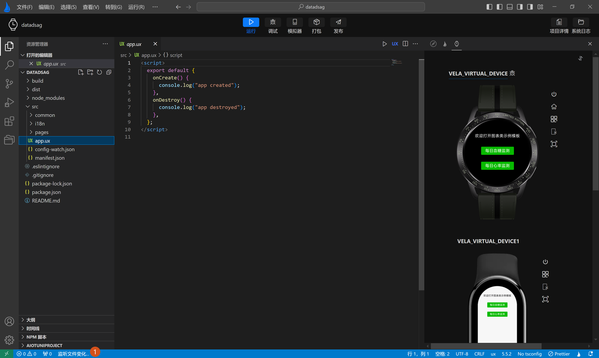
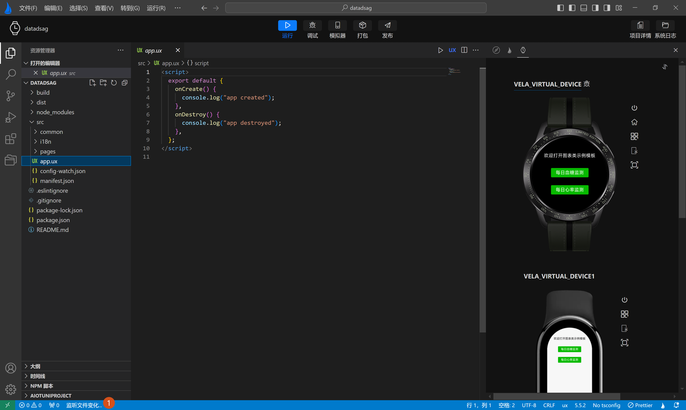

# 应用热更新
在使用AIoT-IDE开发Xiaomi Vela JS 应用时，还内置了热更新功能。开发者在通过点击顶部操作栏运行或调试按钮，运行模拟器时会时刻监听文件变化。

在监听到文件变化会自动触发编译，推送当前项目，实时预览代码编译后的最新效果，当再次点击运行或调试按钮，取消推送时，将停止监听文件文件，减小性能消耗。

在使用AIoT-IDE开发Xiaomi Vela JS 应用时，还内置了热更新功能。开发者在通过点击顶部操作栏运行或调试按钮，运行模拟器时会时刻监听文件变化。

在监听到文件变化会自动触发编译，推送当前项目，实时预览代码编译后的最新效果，当再次点击运行或调试按钮，取消推送时，将停止监听文件文件，减小性能消耗。